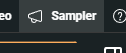
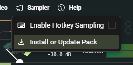
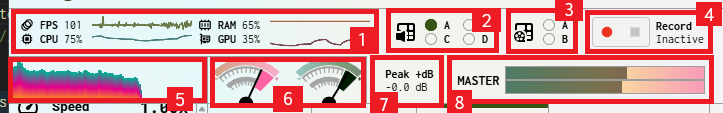
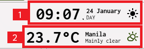
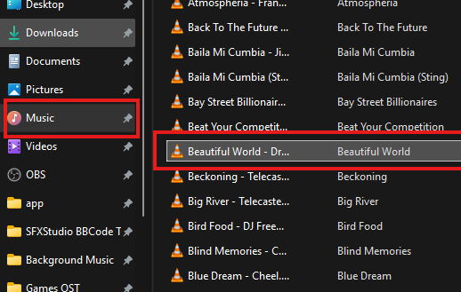
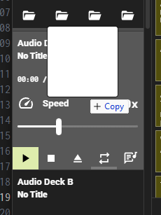
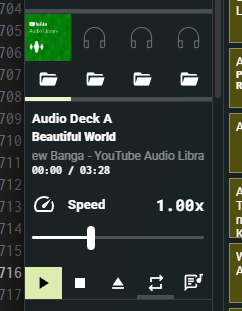

A open-source Virtual Soundboard
and Multimedia Amplifier
This is a user manual for new beginners, you can see the basics of how to use the app.
Categorisations
The sound buttons are colour-coded to help you quickly identify the type of sound effect. Each colour represents a different category, making it easier to find the sound you need. here are the color legends for Sound Buttons:
Default, Uncategorized, Fallback or By ContributionsSpeechesCommonly Used in ProgrammesFM and DJ TapersScoresMusic ScoresAnnouncement TonesOrchestra and Instrumental Hits
The colors of the sound buttons might be different because the app was following the color scheme which the colors might have dark and light tint.
Can't get the audio list into sampler
If the sound buttons are not showing, means that the sound effects are not loaded yet. Here are the following tips:
Procedures
To download automatically without visiting GitHub to download the SFX Pack,
Go to Sampler

Click on Install or Update Pack.

This will donwload the pack from the separate Github Repository. Some sound buttons might be erased to ensure the stable function. and will loaded again once it's finsihed.
Can't play audio
If the sound is not playing, it may be due to the following reasons:
- The audio file is not supported by the app.
- The audio file is corrupted or missing.
- Your device's volume is muted or too low.
- There is a technical issue with the app.
Technically the AudioContext don't have issues anymore on audio routing which is already fixed before 3.x versions.
Why FLAC does show Infinity:NaN on others, but other ones working?
FLAC is a lossless audio codec. It compresses audio without losing any data. Once the specific FLAC audio file does have STREAMINFO metadata, It will show the proper duration. If your encoder didn't include STREAMINFO metadata, the duration will become infinite and the waveform and spectrogram generation will be skipped!
Performance Decks

Media Decks
Play video like AVP (Audio-Visual Presentation), title card, music video and background video such as patterns, landscape and more with External Cast Feature. 2 available Decks are A and B.

Audio Decks
Play your favorite music or audio and mix all together like the actual radio operator! You can adjust the speed, current time and control it!

Caption Deck
If you play video, you can manually add captions instead of loading them automatically. This was useful to add detailed text and read what the narrator is speaking.

Teleprompter Deck
Convert your single lined lyrics into presentation with just one tap! Useful for lightweight presentation without containing the use of graphics. powered by the very first OG and nostalgic text formatting from the mid and late 2010 forums, BBCode!

Animator Deck
Animate all volume controls without touching them everytime the voiceover or host is speaking, Choose Effect, Duration, Interpolation and set volume target (if you use Target on Effect option). and Choose Animate volume to volume control and click Animate!
Topbar

1. Performance Monitor
Shows the overall performance on your system.2. Active Audio Deck Indicator
Shows how many decks for audio are active.3. Active Media Deck Indicator
Shows how many decks for video are active.4. Record Toolbar
Can record sound session while operating.5. Spectrum
Shows how many bars are peaking in different frequencies.6. VU Meter
Shows if the audio is clipping that goes to Peak Label.7. Peak dB Monitor
Shows the overall value of the audio peaks.8. Audio Gain Meter
Shows if the audio is clipping that goes to Red Zone.
Topbar

1. Time and Date Today
Shows the overall system time or world time by specific time zone2. Weather
Shows what is the condition of the place today.
Workbench
Sampler
Play sound effects and music scores on special occasions.

Program
You will see the video playing, lyrics and caption cue.
Spectrogram
You will see artifacts of chords, notes and hisses in the frequency. This is so popular for finding any hidden drawings and messages.

BBCode Designer
Design your presentation powered by BBCode with styling options, animations, fonts and present it using Teleprompter Deck!
Volume and Gain Adjustment
Sampler
Adjusting it's volume, effect, and gain of the samples played in Sound Buttons.

Deck Volume
Adjusting it's volume of the audio from any of the Media Decks.

Return
Adjusting it's volume and gain of the audio from the input or recording device that you set inSettings > Audio > Input and Output > Return.

Master
Adjusting it's volume and balance of the entire audio along with Mixer.
Types of Effects

Stereo Enhancer
This effect simulates a surround sound experience by manipulating the audio channels. It creates a more immersive listening experience by making it feel like the sound is coming from different directions. This was commonly used in music and movies in 5.1 or 7.1 channel setups.

Bass
Enhances the low-frequency sounds in the audio, providing a deeper and richer bass experience. It simulates the subwoofer effect that is included with surround sound setups. You can actually create presets in it!

Fader
A effect that simulates the fade in and fade out effect on audio. Useful for smoother transitions between sounds. If you're famillar with Sound System setups in your area, this effect give you a Gain Control in Mid and High Frequency, which useful to isolate that frequency on host voiceovers! For this effect to work, you need a Bass Effect enabled by setting up Bass Gain to more than 0.1.

Gain
Increases the overall volume level of the audio signal before it is processed by other effects. This can help boost quieter sounds and make them more audible in the mix.

Reverb
Simulates the effect of sound reflecting off surfaces in a physical space, creating a sense of depth and ambiance.

Equalizer
Improves the frequencies of the sounds by adjusting the levels of different frequency bands. 12 bands included from 125Hz to 16kHz.

Pitch Shift
Changes the pitch of the audio without affecting its tempo. Useful for creating special effects or adjusting the key of a musical piece.

Limiter
Limits the audio peaks from Media Decks to avoid distortion and clipping.
Widgets

External Visualizer
Play Visualizer on the Separate Window. useful for occasions and events to output Video Presentation, Title Card, and Background Video using the External Cast feature.

VU Meter
A window that emulates the feel of radio station back in the 80s that can monitor the volume meter to check the peaks happening on audio.

Clock
A window that shows the date and time today.

Clock for OBS
Will use OBS Clock HTML File to OBS Studio using Browser Source Feature. the procedures are in the dialog for you to copy the HTML URL and it's CSS properties.
All Decks (Left Side) - Icons of Media Controls
Here are the media control icons to learn and how it works:

Play
Plays the media.

Pause
Pause the media in the current time.

Stop
It pauses the media and going back to start.

Eject
It remove the media from the deck.

Replay
After the media stops and loop was disabled, this icon will show to replay the media once again.

Loop off
The media will stop after the current time reaches the end.

Loop on
The media will loop after the current time reaches the end.

Import
Import media from Storage Access Framework.

External Cast
It lets you connect video input which is the video source to External Visualizer.

External Cast Connected
Indicates that the video source is connected to External Visualizer.

Video Source Swap
It lets you swap video source inputs into active one that you are playing.

Open Lyrics Viewer
This opens lyrics viewer for each audio deck.

Teleprompter Start
The teleprompter will start to convert BBCodes and teleprompter pages as presentation.

Teleprompter Stop
The teleprompter will stop the presentation.
Open Transcript
This opens the Transcript Viewer to see the full transcript of the teleprompter presentation.

Teleprompter Edit
This opens BBCode Designer to edit the style powered by BBCode and teleprompter pages to converts them as presentation later.

Teleprompter Previous Page
The teleprompter page will back to previous slide.

Teleprompter Next Page
The teleprompter page will go to the next slide.
Import Methods
There are two methods to import media file into the app:
Storage Access Framework
Click on this icon on selected Audio Deck or Media Deck.
Scroll all the way and choose to import media.
Click on Open.
Now you are ready to play your imported media.
Drag and Drop
Simply open your File Explorer, navigate to the directory where your audio files are stored, select the file you want to import.

Drag it into the Audio Decks A, B, C, or D. or Media Decks A or B.

Now you are ready to play your imported media.

You can now also Import the media file by drag and dropping it to the app itself, and it shows the Importing Media on the Status Bar with the percentage since this was coming from External Storage Devices if it is, and the dialog will now appear to see which deck you have to import. The app will highlight the deck and navigate which deck you are import with.
Sound Button Indicators
It indicates that the sound effect is currently playing in selected and specific buttons.It indicates that the sound effect is not playing that actually calls as inactive.
Sound Button Interactions
Mouse

Left Click
Play or Stop Sound sample

Right Click
Play as Sound Sampling
Touchpad on Center or Touch Area

One Finger Tap
Play or Stop Sound sample

Two Finger Tap
Play as Sound Sampling
Touchpad on Button Area

Left Press
Play or Stop Sound sample

Right Press
Play as Sound Sampling
Touch

Tap
Play or Stop Sound sample

Long Tap
Play as Sound Sampling
Keyboard Shortcuts
Settings
F8
Developer Console
F9
Toggle Hotkey
F10
Toggle Fullscreen
F11
Audio Panic
Backspace
Close App/Dialog
Alt
F4
Close Dialog or Exit Fullscreen
Esc
Decrease Volume
Ctrl
-
Increase Volume
Ctrl
+
About App
K
Execute Oscillator Bleep
Z
Open Announcement Execution
M
Orchestra Hit
Q
W
E
R
T
Y
U
I
Orchestra Hit Sharps
2
3
5
6
7
Play/Pause Audio Decks A-D
Alt + 1
Alt + 2
Alt + 3
Alt + 4
Play/Pause Media Decks A-B
Alt + 5
Alt + 6
Keyboard Shortcuts - BBCode Designer
Save
Ctrl + S Save as New
Ctrl + Shift + S Open
Ctrl + O Remove Format
Ctrl + R New Document
Ctrl + N
Keyboard Shortcuts - Program
Show Video Deck A
Ctrl + ⟵ Show Video all
Ctrl + UpArrow Show Video Deck B
Ctrl + ⟶